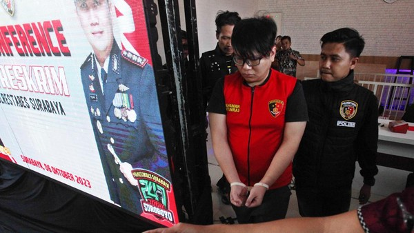

HOME / ABOUT
Kasus mengenai anak anggota DPR yang menganiaya kekasih hingga
tewas
adalah sebuah peristiwa yang serius dan membutuhkan perhatian serius
dari berbagai pihak terkait. Dalam kasus semacam ini, penting bagi
kita untuk memperlakukan setiap individu sebagai tersangka sampai
terbukti bersalah oleh proses hukum yang adil dan objektif.
Kekerasan dalam hubungan pribadi adalah tindakan yang tidak dapat
diterima dalam masyarakat. Kasus seperti ini mengingatkan kita akan
pentingnya menjaga keamanan dan keselamatan dalam hubungan intim.
Tindakan kekerasan tidak hanya melanggar hukum, tetapi juga
melanggar hak asasi manusia dan martabat individu. Dalam menangani
kasus semacam ini, penting bagi sistem peradilan untuk menyelidiki
secara menyeluruh dan objektif, memastikan adanya keadilan bagi
korban dan tersangka, serta mengambil langkah untuk mencegah
terjadinya kejadian serupa di masa depan. Hal ini mencangkup proses
penyidikan yang profesional, pengumpulan bukti yang kuat, serta
persidangan yang adil dan transparan. Kasus semacam ini juga harus
mengingatkan kita akan pentingnya pendidikan dan kesadaran akan
pentingnya pendidikan dan kesadaran akan pentingnya membangun
hubungan yang sehat, saling menghormati, dan tidak melakukan
tindakan kekerasan. Pendidikan mengenai kekerasan dalam hubungan
pribadi harus ditingkatkan di semua lapisan masyarakat agar dapat
mencegah terjadinya kasus serupa di masa depan. Harapannya, melalui
pemahaman yang lebih baik tentang pentingnya hubungan yang sehat dan
penegakan hukum yang adil, kita dapat mencegah dan mengurangi
kejadian kekerasan dalam hubungan pribadi. Dalam kasus ini
melibatkan seorang anggota DPR yang memiliki kedudukan dan pengaruh
yang tinggi, dan anaknya yang diduga melakukan tindakan kekerasan
yang mengakibatkan kematian. Kekerasan dalam hubungan pribadi
merupakan masalah serius yang terjadi di seluruh dunia. Dalam
konteks ini, kekerasan tersebut melibatkan anggota DPR dan
melibatkan kekasih anaknya. Hal ini menunjukkan adanya
penyalahgunaan kekuasaan dan kemungkinan adanya perlakuan yang tidak
adil atau tidak setara dalam hubungan tersebut. Selain itu kasus ini
juga menyoroti perlunya penegakan hukum yang adil dan transparan.
Keterlibatan seorang anggota DPR dapat menimbulkan pertanyaan
mengenai penanganan kasus ini secara adil, tanpa adanya intervensi
atau perlakuan khusus yang tidak adil. Kasus ini perlu digaris
bawahi bahwa pentingnya kesadaran dalam menjaga hubungan yang sehat
dan menghindari kekerasan dalam hubungan pribadi. Perlindungan
terhadap korban kekerasan dalam hubungan pribadi dan keadilan bagi
mereka harus menjadi perhatian utama dalam menangani kasus ini.
Kasus ini juga menunjukkan perlunya tindakan pencegahan kekerasan
dalam hubungan pribadi dan penanganan yang efektif terhadap pelaku
kekerasan. Pendidikan mengenai hubungan yang sehat dan penanganan
kasus kekerasan harus menjadi prioritas dalam upaya mencegah kasus
serupa di masa depan. Tujuan ditulisnya artikel ini adalah untuk
meningkatkan kesadaran masyarakat tentang masalah - masalah
kekerasan dalam hubungan pribadi dan penyalahgunaan kekuasaan, serta
memberikan informasi tentang keadilan dan penegakan hukum. Selain
itu, artikel ini juga dapat membantu masyarakat memahami pentingnya
pencegahan kekerasan dalam hubungan pribadi dan menjaga hubungan
yang sehat. Dengan memberikan informasi yang akurat dan bermanfaat,
diharapkan masyarakat dapat memahami dan mengambil tindakan yang
tepat dalam menghadapi masalah kekerasan dalam hubungan pribadi dan
mendukung upaya - upaya untuk mencegah kasus serupa terjadi di masa
depan. GRT atau Gregorius Ronald Tannur adalah tersangka dalam kasus
penganiayaan seorang perempuan bernama Dini Sera Afrianti (DSA). GRT
merupakan anak dari anggota DPR RI Fraksi PKB Edward Tannur. GRT
yang berumur 31 tahun ini tercatat berprofesi sebagai investor
saham.
Dikutip dari Kilat.com dari situs PDDikti, GRT
pernah beberapa kali tercatat sebagai mahasiswa namun tidak sampai
lulus. Dirinya pernah berkuliah di Sekolah Tinggi Ilmu Ekonomi IEU
dengan prodi Manajemen pada tahun 2009, dan di tahun yang sama, pria
ini juga tercatat sebagai mahasiswa Universitas Kristen Petra
program studi Ilmu Komunikasi. Selain itu, dilihat di akun Facebook
GRT, dia juga pernah berkuliah di Holmes Institute, Melbourne.
GRT dan DSA diketahui berpacaran selama 5 bulan. GRT diduga nekat
menganiaya korban karena masalah asmara. Orang ketiga diduga menjadi
penyebab cekcok tersangka dan korban sebelum penganiayaan berujung
maut terjadi. Dugaan tersebut juga diperkuat oleh konten video yang
diunggah pada akun TikTok DSA. Perlakuan penganiayaan GRT ke DSA
sudah beberapa kali terjadi menurut beberapa teman DSA. Kronologi
penganiayaan oleh GRT dimulai pada tanggal 3 Oktober 2023, sekitar
pukul 18.30 WIB, GRT dan DSA sedang makan di daerah G-Walk,
Citraland, Surabaya. Pada malam itu, salah seorang teman dari GRT
mengundang mereka berdua untuk pergi ke tempat hiburan karaoke
Blackhole KTV di mal Lenmarc, Surabaya Barat. Pada pukul 21.32 WIB,
korban DSA dan GRT datang di Blackhole KTV di room no. 7 dan
bergabung dengan teman-temannya. Mereka berkaraoke sambil meminum
minuman keras. GRT dan DSA berkaraoke sambil minum miras di room 7
Blackhole KTV itu hingga dini hari. GRT dan DSA memutuskan pulang
ketika jam sudah menunjukkan angka 00.10 WIB. Pada saat itulah,
salah satu petugas keamanan mal mengetahui bahwa GRT dan DSA
terlihat bertengkar, bahkan juga sempat cekcok. Menurut keterangan
saksi, GRT telah melakukan penendangan ke arah kaki kanan korban DSA
hingga korban DSA terjatuh sampai posisi duduk. Dalam keadaan
terduduk ini, DSA kembali mengalami penganiayaan oleh GRT. GRT yang
masih memegang botol miras memukulkan botol miras itu ke kepala DSA
hingga 2 kali. Setelah melakukan tindak kekerasan tersebut, keduanya
masih cekcok bahkan saat berada di lift. Hingga ketika mereka berada
di parkiran basement Mal Lenmarc, GRT melakukan penganiayaan yang
lebih kejam. DSA keluar dari lift mendahului tersangka GRT sambil
main handphone hingga di depan mobil dari GRT. Sembari menunggu GRT,
DSA diketahui duduk bersandar di pintu sebelah kiri mobil tersangka
GRT. Seketika GRT masuk ke kabin sopir melalui pintu kanan mobil dan
menyalakan mobil tersebut, GRT melajukan mobil tersebut ke arah
kanan. Akibatnya, sebagian tubuh DSA terlindas mobil bahkan hingga
terseret sejauh kurang lebih 5 meter. Setelah GRT menghentikan
mobilnya, ada sejumlah petugas keamanan datang ke lokasi dan GRT pun
turun dari mobil untuk menaikkan DSA ke bagasi mobilnya.

GRT membawa DSA ke Apartemen Tanglin Orchard PTC Surabaya. Pada pukul 01.15 WIB, GRT memindahkan DSA yang sudah dalam keadaan lemas pasca terlindas dan terseret 5 meter dari bagasi mobilnya ke kursi roda. Dalam kondisi tersebut, GRT mencoba untuk memberikan napas buatan sambil menekan-nekan dada korban namun tidak ada respons sehingga korban DSA dibawa ke rumah sakit National Hospital untuk dilakukan tindakan medis oleh pihak rumah sakit. Setelah menjalani penanganan di rumah sakit National Hospital, DSA dinyatakan meninggal pada pukul 02.32 WIB. Setelah kejadian itu, sekitar pukul 05.00 WIB Polsek Lakarsantri menerima laporan mengenai dugaan penganiayaan. Tim penyelidik dari Sat Reskrim Polrestabes Surabaya segera melakukan otopsi terhadap jenazah korban serta melakukan pemeriksaan saksi dan penyesuaian dengan CCTV dilakukan hingga dilakukan proses pra rekonstruksi.
Kini Gregorius Ronald Tannur (GRT) ditetapkan sebagai tersangka dan akan dijerat dengan dua pasal, yaitu pasal 351 dan 359 KUHP tentang penganiayaan dengan ancaman 12 tahun penjara. Saat ini topik hangat yang menjadi perbincangan adalah status dan latar belakang pelaku berinisial R yang menjadi terdakwa pembunuhan korban yang berinisial D. Pelaku (Ronald Tannur) merupakan seorang anak Pejabat Anggota Dewan DPR RI di Surabaya yang bernama Edward Tannur. R memiliki sifat yang egois dan kasar terhadap sang kekasih. Dini Sera Afrianti (29) merupakan seorang ibu tunggal yang memiliki satu anak. Dini terakhir bekerja sebagai sales promotion girl. Dini memiliki kepribadian yang setia terhadap pasangan dan baik terhadap sang pacar dan teman sekitarnya.
Sebelum kejadian, Dini pernah bercerita di akun media sosialnya lantaran perihal menyindir sang kekasihnya. Ia juga berbagi cerita kepada sang teman dengan mengirim voice note dan berbincang bahwa ia dianiaya oleh pacarnya selama 5 bulan terakhir. Dini juga tidak pernah memberikan kabar akan dirinya kepada keluarga yang berada di Sukabumi, Jawa Barat. Rabu, 4 Oktober 2023 merupakan hari kejadian di mana sang kekasih dan Dini mengunjungi salah satu tempat karaoke (Blackhole KTV Surabaya). Saat itu Dini dan sang kekasih, berinisial R, sedang mabuk dan mengalami cekcok atau perdebatan sehingga ia mendapatkan perlakuan buruk (dianiaya oleh sang kekasih). Perdebatan terus terjadi sebelum keluar dari tempat karaoke (pada saat menaiki lift). Setelah itu, Dini pun tergeletak di basement dan dalam kondisi lengah, kemudian ia ditertawakan lalu divideokan oleh R, kemudian dikirim dan disebar kepada teman-temannya. Diduga lengan Dini dilindas ban mobil secara sengaja saat sedang bersandar dan Dini langsung dimasukan dalam bagasi milik Pelaku R.
Sesudah itu, Dini dibawa terlebih dahulu menuju apartemen dan langsung dibawa ke rumah sakit. Sesampainya di sana, ia dibawa menggunakan kursi roda. R sempat memberikan bantuan pertolongan napas buatan kepada Dini. Namun sayangnya, Dini sudah tidak bernyawa. Jenazah pun disemayamkan di Kampung Gunungguruh Girang, Jawa Barat. Jenazah tiba di rumah pukul 04.00 WIB. Pelaku ditangkap, dijerat dalam penjara dengan pasal yang ditetapkan Pasal 351 Ayat 3 atau 359 KUHP: "Dengan ancaman maksimal 12 tahun dipenjara". Kasus penganiayaan dan kematian yang dialami oleh Dini yang melibatkan tersangka Ronald merupakan sebuah peristiwa yang sangat tragis dan memilukan. Kasus ini memicu perasaan prihatin dan kekecewaan yang mendalam dalam masyarakat. Kejadian ini menjadi cerminan nyata tentang bagaimana tindakan semena-mena dan kekerasan dalam hubungan bisa menghancurkan nyawa seseorang. Seharusnya, cinta sejati bukanlah alasan untuk tindakan kekerasan. Sebaliknya, cinta harus berarti mendukung, melindungi, dan merawat satu sama lain. Keteledoran dan keegoisan tidak boleh membenarkan tindakan kekerasan, dan kita semua sebaiknya belajar dari kasus ini agar tidak mengulangi kesalahan serupa. Seharusnya kejadian seperti ini dapat dicegah jika adanya tindakan tegas yang dilakukan oleh pihak-pihak yang terlibat dalam kasus ini.
Ada beberapa aspek penting yang dapat diperhatikan dan menjadi pelajaran bersama setelah terjadinya kasus seperti ini, yaitu:
a. Pertama-tama, penyelidikan dan pra konstruksi yang dilakukan oleh polisi, serta pemeriksaan 15 saksi, telah mengarah pada penetapan tersangka Ronald. Hal ini dipertegas dalam Pasal 66 (1) Perkap No. 12/2009 "Status sebagai tersangka hanya dapat ditetapkan oleh penyidik kepada seseorang setelah hasil penyidikan yang dilaksanakan memperoleh bukti permulaan yang cukup yaitu paling sedikit 2 (dua) jenis alat bukti." Namun jika terjadi sebuah kendala dimana seseorang tidak memenuhi syarat-syarat yang diperlukan untuk ditetapkan sebagai tersangka, maka tersangka berhak mengajukan permohonan praperadilan. Hal ini sesuai dengan putusan Mahkamah Konstitusi Nomor 21/PUU-XII/2014 yang menegaskan bahwa penetapan tersangka, penggeledahan, dan penyitaan dapat menjadi objek praperadilan sesuai dengan ketentuan yang terdapat dalam Pasal 77 KUHAP. Ini adalah langkah awal yang penting dalam proses penegakan hukum. Hukuman yang adil dan tegas dapat menjadi fondasi yang kuat untuk menghindari tindakan serupa di masa depan.
b. Kedua, kasus ini juga sempat menegaskan dalam hal mengendalikan konsumsi minuman keras. Dalam banyak kasus, alkohol merupakan salah satu pemicu pertengkaran dan tindakan kekerasan. Seharusnya, pihak berwajib serta masyarakatnya dapat lebih mengawasi penjualan alkohol seperti yang tertulis dalam Permendag No. 120 Tahun 2018 tentang Perubahan Kelima Atas Peraturan Menteri Perdagangan Nomor 20/M-Dag/Per/4/2014 Tentang Pengendalian Dan Pengawasan Terhadap Pengadaan, Peredaran, Dan Penjualan Minuman Beralkohol; dan konsumsi minuman beralkohol seperti yang telah tertulis dalam Peraturan Presiden Nomor 74 Tahun 2013 tentang Pengendalian dan Pengawasan Minuman Beralkohol.
c. Ketiga, pelatihan etika dan pemahaman yang lebih dalam tentang nilai-nilai kemanusiaan seharusnya lebih diupayakan. Semua anggota masyarakat, tanpa terkecuali, harus memahami bahwa setiap orang harus berperan aktif dalam mencegah tindakan kekerasan dan membantu mereka yang membutuhkan perlindungan dari hubungan yang tidak sehat. Hal ini telah diperjelas dalam UU No. 12 Tahun 2022 BPK RI yang mengatur mengenai Pencegahan segala bentuk Tindak Pidana Kekerasan Seksual; Penanganan, Perlindungan, dan Pemulihan Hak Korban.
d. Keempat, kesetaraan gender dan pendidikan tentang kekerasan dalam hubungan seharusnya menjadi salah satu prioritas pembelajaran yang ditetapkan. Masyarakat harus memahami pentingnya menghormati hak-hak individu, terutama hak-hak perempuan. Banyak undang-undang yang membahas permasalahan seperti ini, salah satunya adalah Undang-Undang Nomor 7 Tahun 1984 tentang Pengesahan Konvensi mengenai Penghapusan Segala Bentuk Diskriminasi Terhadap Wanita.
Masyarakat harus memahami pentingnya menghormati hak-hak individu, terutama hak-hak perempuan. Banyak undang-undang yang membahas permasalahan seperti ini, salah satunya adalah Undang-Undang Nomor 7 Tahun 1984 tentang Pengesahan Konvensi mengenai Penghapusan Segala Bentuk Diskriminasi Terhadap Wanita. Selain itu dengan adanya kejadian ini, kita juga diingatkan akan pentingnya menjaga keamanan dan menghindari kekerasan dalam kehidupan sehari-hari.
Kronologi kasus yang melibatkan Ronald, putra anggota DPR RI, penganiayaan terhadap Dini hingga meninggal dunia sungguh memilukan.
Untuk menghindari dan mengatasi masalah serupa, perlu dilakukan tindakan dengan beberapa implikasi dan kemungkinan solusi, yaitu:
a. Pertama, penguatan hukum dan penegakan hukum yang tegas harus menjadi prioritas utama, terlepas dari lokasi atau hubungan pelaku. Keadilan harus diutamakan dalam menyelesaikan kasus kekerasan hubungan. Penguatan hukum adalah langkah kunci untuk mencegah dan menangani kasus kekerasan dalam hubungan. Ini termasuk meningkatkan hukuman bagi pelaku kekerasan dan memastikan bahwa hukum diterapkan dengan tegas terlepas dari status atau hubungan pelaku. Keadilan harus menjadi pijakan dalam menyelesaikan kasus-kasus ini, dan proses peradilan harus transparan dan bebas dari pengaruh eksternal. Langkah-langkah ini akan memberikan pesan kuat bahwa kekerasan dalam hubungan adalah perilaku yang tidak dapat diterima dalam masyarakat.
b. Kedua, pentingnya kesetaraan dan kesadaran gender harus ditingkatkan melalui kampanye dan pendidikan yang kuat. Norma sosial yang menolak segala bentuk kekerasan dalam hubungan harus diperkuat. Pentingnya pendidikan tentang kesetaraan gender dan kesadaran adalah untuk mengubah norma sosial yang mendukung perilaku kekerasan. Kampanye pendidikan yang kuat dan pendidikan tentang kesetaraan gender dapat membantu individu memahami pentingnya menghormati hak-hak individu tanpa memandang gender. Dengan memperkuat norma sosial yang menolak kekerasan dalam hubungan, kita dapat mengurangi insiden kekerasan.
c. Ketiga, pendidikan seks dan emosi harus dimasukkan dalam kurikulum sekolah untuk membantu individu memahami hubungan yang sehat dan mengelola emosinya dengan baik. Pendidikan seks dan emosional dalam kurikulum sekolah adalah langkah proaktif yang memungkinkan individu memahami lebih baik aspek-aspek hubungan yang sehat dan belajar cara mengelola emosi dengan baik. Ini mencakup komunikasi yang efektif, penyelesaian konflik yang sehat, dan kesadaran akan batasan-batasan dalam hubungan. Pendidikan semacam ini memberikan landasan yang kuat untuk menghindari kekerasan dalam hubungan.
d. Keempat, akses yang lebih baik terhadap layanan dukungan kesehatan mental dan jaringan shelter bagi korban kekerasan harus ditingkatkan. Meningkatkan akses ke layanan dukungan kesehatan mental dan shelter bagi korban kekerasan adalah penting untuk membantu mereka yang berada dalam situasi berbahaya. Korban kekerasan harus memiliki akses yang mudah ke layanan medis, psikologis, dan konseling yang diperlukan untuk pemulihan mereka. Jaringan shelter yang lebih luas juga diperlukan agar mereka yang menghadapi ancaman dapat ditempatkan di lingkungan yang aman.
e. Kelima, anggota DPR dan pejabat publik wajib menjalani pelatihan etika dan tanggung jawab publik, serta menjaga standar perilaku yang tinggi dalam kehidupan pribadi dan profesional mereka. Anggota DPR dan pejabat publik memiliki peran yang kuat dalam membentuk norma sosial dan menginspirasi masyarakat. Oleh karena itu, mereka harus diwajibkan menjalani pelatihan etika dan tanggung jawab publik. Mereka harus menjaga standar perilaku yang tinggi dalam kehidupan pribadi dan profesional mereka, dan menjadi contoh bagi yang lain. Ini adalah langkah penting dalam menciptakan lingkungan yang mendukung hubungan yang sehat dan bebas dari kekerasan.
Pada akhirnya, perlindungan korban dan pelaporan yang aman harus menjadi prioritas utama untuk menciptakan lingkungan di mana korban merasa terlindungi dan tidak takut untuk melaporkan pelaku kekerasan.. Upaya ini memerlukan kerja sama antara pemerintah, organisasi hukum, masyarakat, dan lembaga pendidikan.. Kasus seperti ini harus dijadikan pembelajaran serius dan perlu diambil langkah khusus agar kasus serupa tidak terulang lagi di kemudian hari. Penting untuk memahami bahwa kekuasaan seharusnya tidak digunakan untuk menakut-nakuti atau merugikan pasangan. Bahkan jika seseorang memiliki jabatan tinggi, tetaplah sadar bahwa itu bukan izin untuk menggunakan kekuasaan dengan cara negatif, termasuk kekerasan dalam hubungan. Komunikasi yang terbuka dan jujur adalah kunci utama dalam menjaga hubungan yang sehat. Cobalah untuk berbicara dengan pasangan secara terbuka, mendengarkan, dan menjaga komunikasi yang positif. Jangan pernah menyakiti orang yang dicintai, baik secara fisik maupun emosional, karena itu hanya akan merusak suatu hubungan antara kedua belah pihak.
Jika merasa kesulitan mengendalikan emosi atau perilaku, jangan ragu untuk mencari bantuan dari terapis, konselor, atau dukungan dari teman dan keluarga. Selain itu, dukung dan hargai kesetaraan gender dalam hubungan. Tidak ada tempat untuk perilaku yang merendahkan atau merugikan pasangan berdasarkan jenis kelamin. Jika memiliki status yang tinggi atau kekuasaan, jadilah contoh positif dalam memperlakukan pasangan dan tunjukkan bahwa hubungan yang sehat adalah yang paling berharga. Penting juga untuk mendukung korban kekerasan jika mengetahui seseorang yang menjadi korban. Bantu mereka mencari bantuan, dengarkan cerita mereka, dan berikan dukungan yang mereka butuhkan. Ingatlah bahwa hukum berlaku untuk semua orang, dan jika ada pelanggaran hukum dengan kekerasan, akan ada konsekuensi. Terakhir, selalu ingat bahwa selalu ada pilihan lain dalam menyelesaikan konflik. Jika Anda merasa marah atau frustrasi, carilah cara damai dan sehat untuk mengatasi masalah, dan hindari kekerasan. Kekerasan dalam hubungan adalah masalah serius yang dapat dicegah dengan komitmen untuk mengubah perilaku negatif menjadi cara yang lebih sehat dan menghormati.
Dengan demikian, kekerasan merupakan tindakan yang tidak dapat diterima dengan alasan apapun. Penting bagi kita untuk dapat menjaga diri kita sendiri, baik secara jasmani maupun rohani. Tindakan kekerasan tidak hanya melanggar hukum, tetapi juga melanggar hak asasi manusia dan norma-norma yang ada di masyarakat. Kasus yang melibatkan anak dari seorang anggota DPR ini menunjukkan tingginya sifat superior yang dimiliki oleh orang-orang yang memiliki kekuasaan. Mereka merasa dapat berlaku semena-mena dan dapat selalu lepas dari hukuman karena mereka memiliki uang dan kuasa. Hal ini merupakan satu poin penting yang harus diperbaiki pada sistem hukum Indonesia. Aparat hukum tidak seharusnya menerima sogokan dalam bentuk apapun untuk kepentingan pribadi. Hukum seharusnya bersifat adil bagi siapapun tanpa terkecuali.